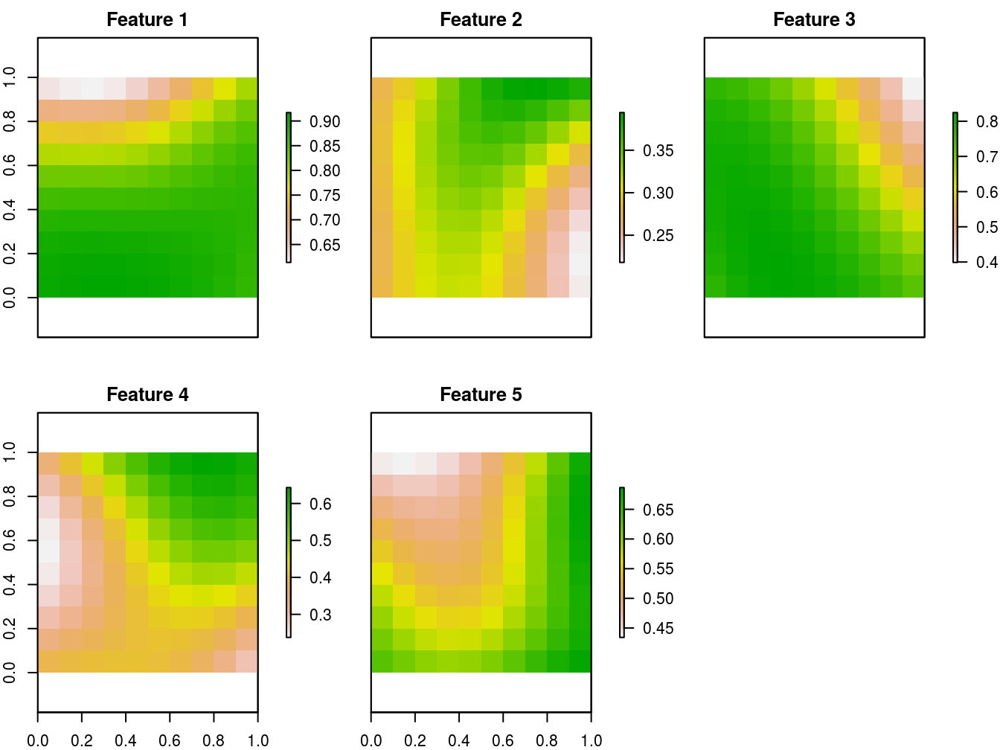
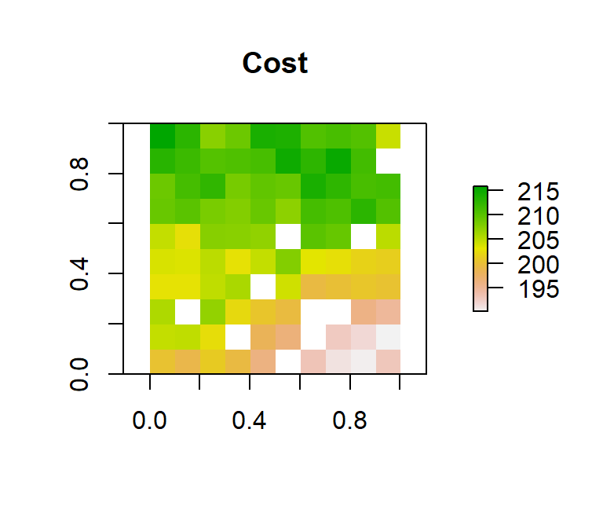

Prioritizr is an R package for solving systematic conservation prioritization problems using integer linear programming (ILP) techniques. The package offers a flexible interface for creating conservation problems using a range of different objectives and constraints that can be tailored to the specific needs of the conservation planner. Conservation problems can be solved using a variety of commercial and open-source exact algorithm solvers. In contrast to the algorithms conventionally used to solve conservation problems, such as greedy heuristics or simulated annealing, the ILP algorithms used by prioritizr are guaranteed to find optimal solutions. This package also has the functionality to read Marxan input data and find much cheaper solutions in a much shorter period of time than Marxan (Beyer et al. 2016).
For a walk-through of the functions available in the prioritizr package and their usage with a simulated dataset, refer to the Quickstart Guide.
Systematic conservation prioritization is a rigorous, repeatable, and structured approach to designing new protected areas that efficiently meet conservation objectives, while minimizing socioeconomic cost (Margules and Pressey 2000). Historically, conservation decision-making has often evaluated parcels opportunistically as they became available for purchase, donation, or under threat. Such decisions may or may not maximize the long-term persistence of target species or communities, or the biodiversity returns on on dollars invested, in the absence of a landscape-level understanding of the distribution of target species and communities. Optimization tools are meant to help planners simulate alternative reserve designs over a host of biodiversity and management goals to prioritize parcels and conservation actions. Such tools allow you to specify biodiversity targets such as focal or indicator species richness and ecosystem representation, while minimizing overall costs of land acquisition measured in various ways. As part of the systematic planning process, conservation prioritization can contribute to a transparent, inclusive, and defensible decision making process.
A reserve design exercise starts by dividing the study region into planning units (typically square or hexagonal cells) and, for each planning unit, assigning values that quantify socioeconomic cost and conservation benefit for a set of conservation features. The cost can be the acquisition cost of the land, the cost of management, the opportunity cost of foregone commercial activities (e.g. from logging or agriculture), or simply the area. The conservation features are typically species (e.g. Clouded Leopard) or habitats (e.g. mangroves or cloud forest). The benefit that each feature derives from a planning unit can take a variety of forms, but is typically either occupancy (i.e. presence or absence) or area of occurrence within each planning unit. Finally, in some types of reserve design formulations, for each conservation feature, representation targets must be set, such as 20% of the current extent of cloud forest or 10,000 km2 of Clouded Leopard habitat.
# load feature data
data(sim_features)
# plot the distribution of suitable habitat for each feature
plot(sim_features, main = paste("Feature", seq_len(nlayers(sim_features))),
nr = 2)
The goal of the reserve design exercise is then to optimize the trade-off between conservation benefit and socioeconomic cost, i.e. to get the most benefit for your limited conservation funds. Different reserve design formulations achieve this in different ways. In the minimum set problem formulation used by Marxan, the goal is to find the set of planning units that meets the representation targets while minimizing cost. Alternatively, in the maximum coverage formulation, the goal is to maximum the overall representation of conservation features while keeping cost within a fixed budget. Other approaches are possible that build on these basic formulations.

Formulating the conservation objective mathematically as an optimization problem allows us to tap into the rich body of knowledge that exists in the field of mathematical optimization. In general, the goal of an optimization problem is to minimize an objective function over a set of decision variables, subject to a series of constraints. The decision variables are what we control, usually there is one binary variable for each planning unit specifying whether or not to protect that unit. The constraints can be thought of as rules that need to be followed, for example, that the reserve must stay within a certain budget or meet the representation targets.
Fortunately a wide variety of approaches have been developed for solving optimization problems. Reserve design problems are frequently solved using simulated annealing, a stochastic heuristic for approximating global optima of complex functions. This method is conceptually simple and can be applied to a wide variety of optimization problems, however, it won’t, in general, find the true optimal solution. More importantly, it is impossible to quantify how close the resulting solution is to the optimal solution.
Prioritizr focuses on using more modern algorithms that can efficiently solve conservation planning problems exactly or to within a given gap to optimality. Integer Linear Programming (ILP) represents the state-of-the-art approach to optimization problems, being faster and more efficient than simulated annealing, but only recently becoming available with the advent of fast computer algorithms (Beyer et al. 2016). The general form of an ILP problem can be expressed in matrix notation as:
\[\text{Minimize} \space \boldsymbol{c}^\text{T} \boldsymbol{x} \space \space \text{subject to} \space A\boldsymbol{x} \space \Box \space \boldsymbol{b}\]
where \(x\) is a vector of decision variables, \(c\) and \(b\) are vectors of known coefficients, and \(A\) is the constraint matrix. The final term specifies a series of structural constaints and the symbol is used to indicate that the relational operators for the constraint can be either \(\geq\), \(=\), or \(\leq\). For the minimum set problem formulation described above, \(c\) would be a vector of costs for each planning unit, \(b\) a vector of targets for each conservation feature, box would be \(\geq\) for all features, and \(A\) would be the representation matrix with \(A_{ij} = r_{ij}\) the representation level of feature \(i\) in planning unit \(j\).
These exact ILP algorithms are implemented in a variety of commercial and open source solvers and prioritzr provides a unified interface to some of these solvers. The intention is to abstract away the details of these solvers so that the user requires minimal knowledge of the specific solvers or ILP in general. The currently supported solvers are as follows. Each must be installed separately from this package to be accessible.
gurobi package to solve problems.Rsymphony (on CRAN) and lpsymphony (on Bioconductor).The objective function is the mathematical formulation of the conservation planning problem. All conservation planning problems involve minimizing or maximizing some kind of objective. For instance, the planner may require a solution that conserves enough habitat for each species while minimizing the overall cost of the reserve network. Alternatively, the planner may require a solution that maximizes the number of conserved species while ensuring that the cost of the reserve network does not exceed the budget.
In prioritizr, the type of objective function must be manually specified. While some users may feel that explicitly defining an objective for a conservation problem adds some element of arbitrariness or subjectivity to the decision making process, we remind them that “canned” decision support tools (such as Marxan or Zonation) also have objectives. The key difference here is that instead of choosing between different software programs here the user is explicitly choosing their objective within the single environment.
prioritizr currently handles five types of prioritization objective functions: minimum set, maximum coverage, a hybrid formulation called maximum feature coverage, a variant of the maximum feature formulation designed for phylogenetic representation, and a generic maximum utility function.
In the context of systematic reserve design, the minimum set objective function seeks to find the set of planning units that minimizes the overall cost of a reserve network, while meeting a set of representation targets for the conservation features. This objective is equivalent to a simplified Marxan reserve design problem, with the Boundary Length Modifier (BLM) set to zero.
The reserve design problem for the minimum set objective function can be expressed mathematically for \(n\) planning units as:
\[\text{Minimize} \sum_{i=1}^{n}x_i c_i + \text{ subject to } \sum_{j=1}^{n}x_j r_{ij} \geq T_i \space \forall \space i\]
Where where \(x_i\) is a binary decision variable specifying whether planning unit \(i\) has been selected (1) or not (0), \(c_i\) is the cost of planning unit \(i\), \(r_{ij}\) is the representation level of feature \(i\) in planning unit \(j\), and \(T_i\) is the target for feature \(i\). The first term is the objective function and the second is the set of constraints. In words this says ’find the set of planning units that meets all the representation targets while minimizing the overall cost.
The maximum coverage problem seeks to find the set of planning units that maximizes the overall level of representation across a suite of conservation features, while keeping cost within a fixed budget. This problem is roughly the opposite of what the conservation planning software Marxan does.
The maximum coverage problem can be stated mathematically, for \(n\) planning units and \(m\) conservation features, as:
\[\text{Maximize} \sum_{i=1}^{m} \sum_{j=1}^{n} x_j r_{ij} + \text{ subject to } \sum_{i=1}^{n}x_i c_i \leq B\]
Where \(x_i\) is a binary decision variable specifying whether planning unit \(i\) has been selected (1) or not (0), \(c_i\) is the cost of planning unit \(i\), \(r_{ij}\) is the representation level of feature \(i\) in planning unit \(j\), and \(B\) is the budget.
The maximum target coverage problem is a hybrid between the minimum set and maximum cover problems in that it allows for both a budget and targets to be set. This problem finds the set of planning units that meets representation targets for the most species while staying within a fixed budget. If multiple solutions can meet all targets while staying within budget, the cheapest solution is chosen. This objective was inspired by the conservation problem defined in Cabeza and Moilanen (2001).
The maximum target coverage problem can be stated mathematically, for \(n\) planning units and \(m\) conservation features, as:
\[\text{Maximize} \space -a\sum_{i=1}^{n} x_i c_i + \sum_{j=1}^{m}y_j\]
Subject to:
\[\sum_{i=1}^{n}x_i c_i \leq B \space \text{and} \space \sum_{j=1}^{n} x_j r_{ij} \geq y_iT_i \space \forall \space i\]
where \(x_i\) is a binary decision variable specifying whether planning unit \(i\) has been selected (1) or not (0), \(y_{ij}\) is a binary decision variable specifying whether the target for species \(i\) should be met, \(c_i\) is the cost of planning unit \(i\), \(r_{ij}\) is the representation level of feature \(i\) in planning unit \(j\), \(B\) is the budget, and \(T_i\) is the target for feature \(i\). Finally, the factor a is chosen so that the first term of the objective function is much smaller than the second. This ensures that the reserve cost only plays a role in distinguishing between solutions that meet the same number of targets.
The maximum phylogenetic representation problem is similar to the maximum features problem in that it allows for both a budget and targets to be set. This problem finds the set of planning units that meets representation targets for a phylogenetic tree while staying within a fixed budget. If multiple solutions can meet all targets while staying within budget, the cheapest solution is chosen.
The maximum phylogenetic objective can be stated mathematically in the same way that the maximum feature objective, but uses a phylogenetic tree rather than biodiversity features. In prioritizr, this objective requires the installation of the ape package, designed for working with phylogenetic data.
To use your own data with prioritizr, you first need to prepare your dataset. If the solve function doesn’t run correctly, the first thing to check should be your own data. That is, one or more files may be malformed and not in compliance with the specification. The three types of data input that must be provided to prioritizr are summarized below.
Examples of planning units within a project area include a map of planning unit boundaries (a ‘cadastral layer’), delineated watersheds, or a user-defined grid placed over the project area. Acceptable input formats include rasters, polygon or polyline shapefiles, data frames, or numeric vectors specifying the planning units to use in the reserve design exercise
Because minimizing the costs of conservation is generally a goal of stakeholders, each planning unit must have an associated cost. Types of costs vary with the goals of each project and are ultimately limited by the cost metrics available for planning. Some examples of cost metrics include: 1) the total land area included in the solution (ha), 2) the estimated costs of managing or restoring acquired parcels, 3) the opportunity costs of displaced commercial activity, industry, tourism, or recreational access, and 4) the costs of acquiring land. In prioritizr, cost (should be incorporated into the project area upload?)
‘Biodiversity features’ may refer to bird and plant species distributions, specific habitat types, or special elements identified and mapped within the planning area of interest. These data are typically organized as tables, wherein each planning unit is associated with an index of abundance, a probability of occurrence, or the presence/absence of a particular biodiversity feature of interest. In prioritizr, the input format of features must correspond with the input format of the project area. If the planning units are a raster, then the features must be a RasterStack object. If the planning units are input as a data frame object, then features must also be a data frame, following the conventions of Marxan. In the latter case, an RIJ matrix must be also constructed that identifies the amount of each feature in each planning unit.
For more detailed information on how data are incorporated into problem formulation in prioritizr, and for several worked examples on a simulated dataset, consult the Quick Start vignette. You may also wish to refer to the vignettes provided in the supplemental prioritizrdata package, which use prioritizr functions to work through the real-world examples from Tasmania and Salt Spring Island.